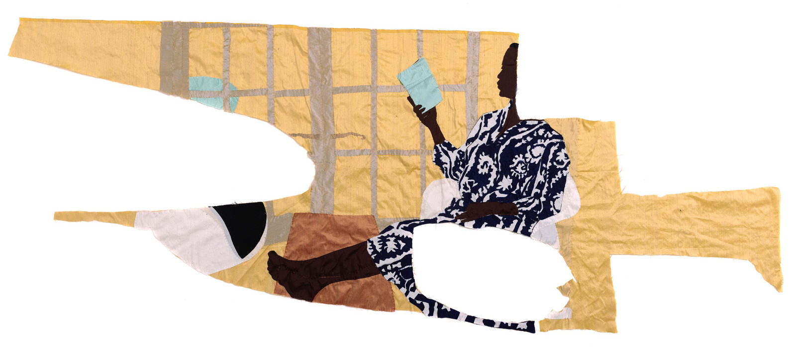
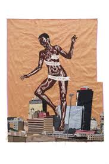
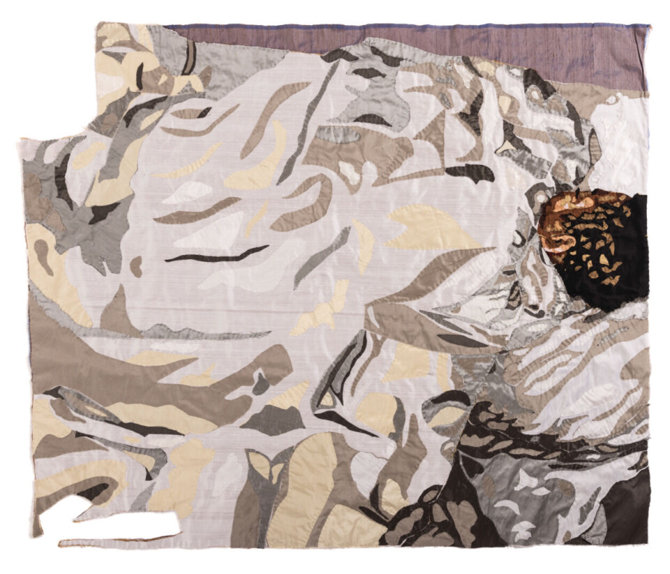

Malawi · Botswana · South Africa
Billie Zangewa
Visual Artist — Silk Collage
Billie Zangewa hand-stitches raw silk into intimate self-portraits — scenes of domestic life in Johannesburg that quietly assert the power and complexity of Black womanhood. Working from her kitchen table, she builds images thread by thread from salvaged and purchased silk fragments, each work both personal diary and political statement.
Artist in Her Own Words

Artist Interview
Billie Zangewa — A Quiet Fire
Artist Statement
I call them silk collages. Not tapestries — the technique I use is exactly like collaging. I work from my kitchen table in Johannesburg, which is difficult because we can't cook when I'm making a work. But limitations are what oils creativity — it's all part of the process.
"I am a Black African woman and I have a place in this society and I have an inner strength that I will use to mark my place."
My work looks pretty on the surface, but when you get a little bit closer you start to realise there's an underlying message that's a little more serious than first impressions suggest. That's also why I address socio-politics in a way that's quite gentle and palatable — it makes the conversation a lot easier.
On process and material
I learned to sew very young. I actually can't sew with a machine because I feel I don't have control — I love the hand stitching. The shapes happen organically. If I buy a yard of fabric and I need that colour in a piece, I pin the paper pattern onto the fabric and cut what I need. It's really organic and spontaneous.
I started out using free fabrics because I had no money. As I started selling my work I could go to the fabric store. But I still enjoy being gifted a scrap of something by a friend, or going thrift shopping and finding something in silk to repurpose. The limitation is the mother of invention. I really do believe that.
Interview transcript
Full Transcript
Billie Zangewa: My name is Billie Zangewa and I am a visual artist based in Johannesburg, South Africa. I call them silk collages. I don't call them tapestries because the technique that I use is kind of a bit like collaging and in fact it's exactly the same.
So I was born in Blantyre, Malawi to a Malawian father and a South African mother. Then my family moved to Botswana where I was raised. Billie was an endearment that my friends in primary school gave me and it followed me everywhere I went.
My interest in art started in primary school. My best friend came to me in the morning and she was like, Billie, I've got something amazing to show you. So then out of her bag she pulled out this portrait drawing of Princess Diana that she had done at home the night before and it was just so beautiful that I was touched — it was like I was punched in the stomach — and the emotion was so profound that I just knew in that moment that I wanted to give people that feeling.
I went to university at Rhodes University which has a fine art department. After graduating I moved back home to Botswana which is really where my career as an artist began. When I started working with my textiles it was not accepted as art. I was called a craftswoman and I was dismissed, and it was a little infuriating because when I started doing my textiles William Kentridge was experimenting with a women's group doing embroidered works but they accepted him because he was William Kentridge — and the frustrating thing was he wasn't even picking up a needle.
So you see the kind of duality in the art world of where women artists are placed and where male artists are placed. But I wasn't put off because I was like, I'm going to keep working at this until it's accepted.
My current show that's touring the UK now is called A Quiet Fire and it was curated by the director of CCA Brighton. For him it was really about how I used the stitching to create something powerful — a gentle power. The works in that show include Paradise Revisited which shows my son and I in the south of France having our first post-COVID holiday enjoying ourselves.
There's also a work called Guess Who's Coming to Dinner which really speaks to the whole kind of Black person going to visit the white family and how awkward it is. And there's Sweet Dreams where I'm basically lounging in a tree like a leopard — that work is really about my yearning for days gone by when my ancestors lived a much more simple life in Africa and were more connected to nature.
Back to Black was the first time I was going out in the evening after the birth of my son — the first time I was putting on a nice dress. It was me coming to terms with this new stage where I would go out in the evening without my son after having been housebound for so long and identifying as mother and not as Billie the individual.
My home is basically the centre of my universe. I think it was only natural that I would work from home because I feel safe enough to be vulnerable and open myself up and discover who I am creatively. Up until this point I haven't had a studio so I've been working at my kitchen table which is very difficult because we can't cook when I'm making a work. But limitations are what oils creativity — it's all part of the process.
I started out using the free fabrics that I got because I had no money but as I started selling my work I was like, wow, now I can make bigger works. I can go to the fabric store and buy bits of fabric. But I also still really enjoy being gifted a little scrap of something by a friend or going thrift shopping and finding something in silk to repurpose.
I learned how to sew really, really young. I actually can't sew with a machine because I feel that I don't have control. I love the hand stitching. The shapes happen kind of organically — if I buy a yard of fabric and I need that colour in a piece then I'll pin the paper for that piece onto the fabric and cut out what I need. It's really organic and spontaneous. I definitely do embrace the limitations.
The role of art in society is multifaceted. The first role is really just for pleasure, to enjoy looking at something beautiful. But also the other role that art plays — something I play with — is to address socio-politics in a way that's quite gentle and palatable so that it makes the conversation a lot easier. My work looks so pretty on the surface but then when you get a little bit closer you start to realise there's an underlying message that's a little bit more serious than first impressions.
This work is called Field of Dreams and it is the title piece of the show. I had this wish — wouldn't it be amazing if people of different cultures and skin tones could just come together and find commonality and just be one big happy family and see the things in common as opposed to the differences. So I called it Field of Dreams because really it is my dream for the world.
One of the reasons I started making art was that I would have a certain emotion that I found difficult to resolve and then when I dealt with it in a work it would be like the emotion is going into the work so I'm being released and the burden is being carried by my work. So yes, in a way it is an empowering form of therapy that I get to share — joys and also shame — shameful things that I could potentially keep secret but prefer to break taboos because shame is a very toxic emotion.
I am a Black African woman and I have a place in this society and I have an inner strength that I will use to mark my place.
Selected Works

Field of Dreams
2022
Raw silk, hand-stitched. A multi-figure composition showing people of different skin tones and cultures gathered together in a shared outdoor space. The silk panels are arranged like a patchwork, each person rendered in a slightly different tonal palette yet unified by the warmth of the hand-stitched surface.

Back to Black
2020
Raw silk, hand-stitched. A self-portrait of the artist dressed to go out for the first time after the birth of her son. The figure stands centred in the composition, wearing a dark dress assembled from multiple silk fragments. The surrounding space — a Johannesburg interior — is rendered in warm amber and terracotta tones.

Sea of Love
2021
Raw silk, hand-stitched — made for Site Santa Fe. A small figure — the artist's sleeping son — lies beneath undulating fabric that reads simultaneously as bed covers and ocean waves. The wavy horizontal bands of green, terracotta, and gold fill most of the composition, the child barely visible beneath them, evoking both the safety of sleep and the mystery of dreams.